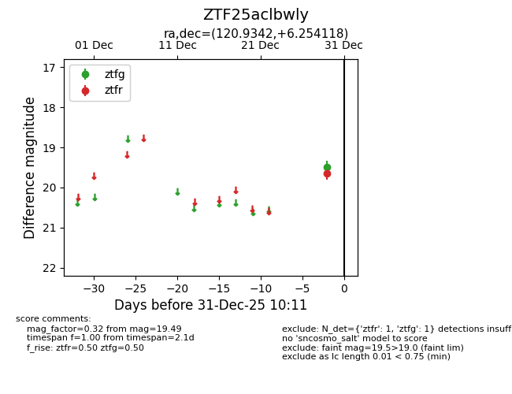
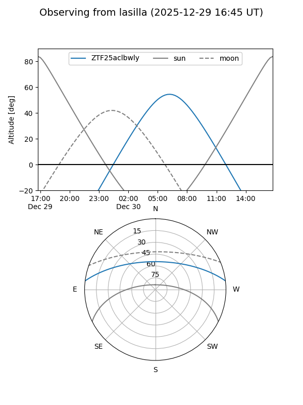
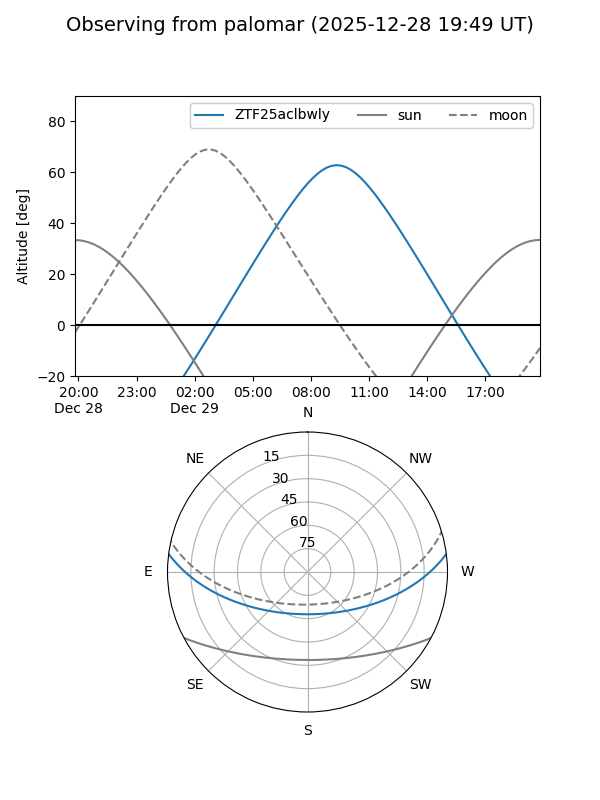

ZTF25aclbwly
Target ZTF25aclbwly at 2025-12-29 10:11
Aliases and brokers:
FINK: fink-portal.org/ZTF25aclbwly
Lasair: lasair-ztf.lsst.ac.uk/objects/ZTF25aclbwly
ALeRCE: alerce.online/object/ZTF25aclbwly
alt names
ZTF25aclbwly (ztf,fink_ztf)
Coordinates:
equatorial (ra, dec) = 120.9342,+6.25412
equatorial (HMS+DMS) = 08:03:44.21,+06:15:14.82
galactic (l, b) = (215.5782,+18.91446)
Flags:
Photometry:
last ztfg=19.49
1 ztfg detections
Lightcurve

Visibility


Additional plots